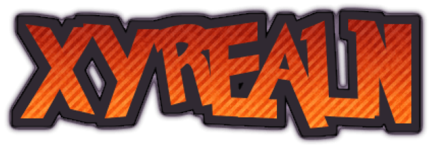

About the Server

Join XYREALN for a fun and free Minecraft SMP without any Money or P2W involved!
The seed is private knowledge of the Operator
Server Status
Checking status...
Seasons
The server is reset to a blank world with wiped inventories and all every three months.
IT IS NOT POSSIBLE TO KEEP YOUR INVENTORY BETWEEN SEASONS AND KEEPING IT WILL RESULT IN A SEASON LONG ACCOUNT BAN
Why is the server down?
Season One Will Start Tomorrow Sep. 10th At 7pm EST